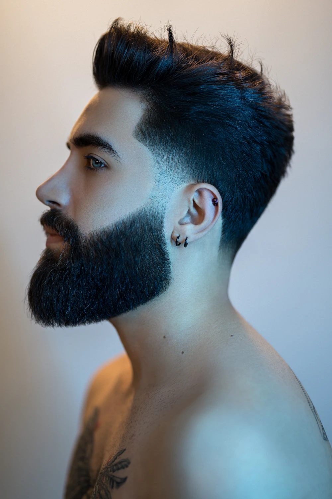
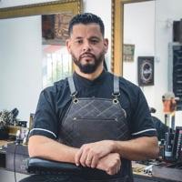

01 / 03Degradê + volumeReferência de estilo · Ahmad Ebadi ↗
Cabelo, barba e personalidade.
Um corte que combina com você.
Seu próximo horário é na Barbu's.

01 / 03Degradê + volumeReferência de estilo · Ahmad Ebadi ↗
Os essenciais
A Barbu's
Conheça a equipe e escolha seu profissional na hora de agendar.

Escolha o serviço, o profissional e o melhor horário na nossa agenda.
Agendar horário